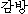
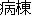
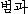
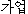
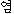

Linking English Words in Two Bilingual Dictionaries
to Generate Another Language Pair Dictionary
Satoshi Shirai and Kazuhide Yamamoto
ATR Spoken Language Translation Research Laboratories
2-2-2 Hikaridai, Seika-cho, Soraku-gun, Kyoto, 619-0288, JAPAN
E-mail: {shirai,yamamoto}@slt.atr.co.jp
Abstract
In developing a machine translation system, one of the difficult tasks is how to build a transfer
dictionary. It has been built by human labor from scratch in most cases. This approach, however, is very ineffective
from the viewpoint of cost and time. To avoid this problem, we generate a Korean to Japanese
dictionary as a sample, taking advantage of existing linguistic resources, which consist of a Japanese to English
dictionary and a Korean to English dictionary for the present goal. First, we extract some sets of
English words corresponding to Korean words from a Korean to English dictionary. Second, we search
for Japanese words having English equivalents that are similar to Korean counterparts in meaning.
Finally, we link the Korean words to Japanese ones. The degree of similarity is determined
according to how many translated words are shared between Korean and Japanese. We test 1,000 Korean
words extracted at random and get 365 appropriate Japanese words. The result shows that 72% are
accurate for a degree of similarity of 0.8 and above.
keywords:
bilingual dictionary, dictionary generation, intermediate language, similarity of translation
[ In Proceedings of ICCPOL-2001, pp.174-179 (May, 2001). ]
INDEX
1 Introduction
In the development of a machine translation system, it is necessary to create a bilingual dictionary
of the source language and the target language according to the linguistic pair being dealt with,
but for such a task, the costs are enormous from the viewpoints of labor and time. In particular,
when one of the languages is not that familiar, in other words, when the number of users is
comparatively small, it is difficult to secure development personnel familiar with both languages.
Sometimes there may exist no bilingual dictionaries usable for humans as reference material.
However, even if bilingual dictionaries do not directly exist for a source language and a target
language, the possibility is high that bilingual dictionaries of both the source and target exist in
an identical third language, particularly English. In other words, it is conceivable that the
generation of a bilingual dictionary through English can be
effective1. By effectively using such
linguistic resources, the establishment of methods of generating bilingual dictionaries between
various languages can be expected.
A method of generating a bilingual dictionary of a source language and
a target language through a third language was proposed by Tanaka et
al. [2,3]. However, this effort was confined to the effect of being
"useful for revising and supplementing for the vocabulary of existing
dictionaries." Although the basic elemental technologies in the
method of Tanaka et al. were comprehensively proposed, we believe that
there are problems in the usage of these technologies, and we
instead attempt the reconstruction of the method towards a method
involving engineering usability.
Below, we assume English as our third language, and we investigate a
method of generating a bilingual dictionary of a source language and a
target language by using a bilingual dictionary of the source language
to English and that of the target language to English. In addition,
we do not use lexical information of the source and/or target
languages in order to verify the practical nature of the method.
Based on the fact that the verification of the validity of translation
pairs is not easy, we aim at achieving a method of verifying the
accuracy of the output translation pair rather than the recall of the
translation pair.
2 Problems of the Conventional Method
A method of generating a bilingual dictionary of a source language and
a target language through an "intermediate" language was proposed by
Tanaka et al. [2,3]. The outline of their method is as follows (an
attempt is made to generate a Japanese-French dictionary with English
assumed to be the "intermediate" language).
- 1.
- Create a Japanese-English "harmonized dictionary" that
integrates a Japanese-English dictionary and an English-Japanese
dictionary, and an English-French "harmonized dictionary" that
integrates an English-French dictionary and a French-English
dictionary.
- 2.
- By using the "harmonized dictionaries," place English translation
sets corresponding to Japanese words and English translation
sets corresponding to French words in a "selection area," and
judge results having a lot of matching translated words as being
in a bilingual relationship ("one time inverse consultation").
- 3.
- By using the "harmonized dictionaries," carry out a second-stage
dictionary selection of "Japanese
 EnglishFrench" or "French
EnglishJapanese", place the last translated sets of French
words or Japanese words in a "selection area," and judge the
results having a lot of common morphemes as being in a bilingual
relationship ("two times inverse consultation").
EnglishFrench" or "French
EnglishJapanese", place the last translated sets of French
words or Japanese words in a "selection area," and judge the
results having a lot of common morphemes as being in a bilingual
relationship ("two times inverse consultation").
They report that "Comparing the resulting dictionary with published
dictionaries showed that data obtained are useful for revising and
supplementing the vocaburary of existing dictionaries," as a result of
the above procedure.
We considered that the following problems would appear in the method
of Tanaka et al. considering the automatic generation of a bilingual
dictionary of Japanese and Korean.
- (a)
- "Harmonized dictionary" problem.
In order to increase the coverage, an appropriate solution might seenn to be the use of
"harmonized dictionaries" that combine dictionaries differing in terms
of directivity.2
However, because the
linguistic nature of Japanese and that of English largely differ,
expository translations would appear in
large numbers and would be hard to use
with the method of Tanaka et al., even if an EJ dictionary were
inverted and made into a JE dictionary. The same problem would appear with
Korean and English. In other words, "harmonized dictionaries" are perhaps
effective in improving the extraction of translation pairs, but there
is doubt in their effectiveness towards the accuracy of extracted results.
- (b)
- Multiple word translation problem.
If the English translation of a word of a source language came to be
multiple words, a bilingual dictionary from English to the target
language would generally be powerless. In other words, effective
translation is best achieved only if
the English translation is one word. We also believe that this
problem cannot be clarified easily with the correspondences between
English and French.
- (c)
- "Two times inverse consultation" problem.
The description of a bilingual dictionary would perhaps be effective
for the improvement of the recall, but we think that it would further
reduce the accuracy with increasing fineness. In addition, not much
labor-savings could be expected by automatic generation since the
need would arise for people to investigate all outputs.
- (d)
- Source language or target language vocabulary information use problem.
As long as a target language does not involve the contributions of words of a number
of users, we believe it is not easy to investigate the
correspondences of the source language and target language. This conceivably can largely obstruct
the practical use of the method.
- (e)
- Linguistic characteristics problem.
French and English have closer linguistic characteristics compared
with Japanese and English. Considering the generation of a bilingual
dictionary of Japanese and Korean, the source language and target
language would be in a close relationship and the "intermediate
language" would be in a distant relationship. In contrast, if we were
to focus on a bilingual dictionary of Chinese and Japanese, the source
language, intermediate language, and target language would all be in a
distant relationship. Whether it would be proper to handle these at
the same level has not been verified.
Although the method of Tanaka et al. can be considered to basically
emphasize the generation of translations and aims at the realization
of a practical method, it is difficult to say that it functions
effectively in the report. Accordingly, we have decided to aim at the
establishment of a method involving engineering usability, by
reconsidering the method of Tanaka et al.
3 Improved Method
We decided to set the following presuppositions for our investigation
on an alternative method.
- (1)
- Both a bilingual dictionary from the source language to English
and a bilingual dictionary from the target language to English
exist.
- (2)
- Either the source language or the target language cannot be
understood (text processing is possible).3
- (3)
- It is possible to use various lexical information of English.
- (4)
- It is acceptable to use various lexical information of the
target language or source language (not (2) above).
(1) and (2) are necessary conditions. (3) is an optional condition,
but it does not rely on the characteristics of the source language and
target language. Moreover, the generality of the method is never lost
even if this condition is added, since English functions as an actual
intermediate language in communications among humans.
In contrast, (4) is realistically possible, but it is necessary to
discuss this by separating (1), (2), and (3), since a problem arises
in the practical use of the method.
In this paper, however, (3) and (4) hold in the proposal.
On the above assumptions, we attempt to test the following method by
concentrating on the generation of a Korean-Japanese dictionary.
First, we assume that harmonized dictionaries are not employed for the
reasons in the previous subsection. The linguistic characteristics in
Japanese and English largely differ, and so it can be considered that
the editing policies of Japanese-English dictionaries and
English-Japanese dictionaries (for Japanese use) largely differ.
The same can also be said for Korean and English.
Accordingly, as a first step, we use only a Korean-English dictionary
and a Japanese-English dictionary, with the aim of providing natural
Japanese for natural Korean. We use the "one time inverse consultation
method" of Tanaka et al. as a method to judge the word correspondences
of Korean and Japanese. In other words, we extract English
translation word sets corresponding to Korean words from a
Korean-English dictionary, and moreover, extract English translation
word sets corresponding to Japanese words from a Japanese-English
dictionary. Then, we judge those pairs having more common words (from
among both English word sets) to be in a bilingual relationship.
4 Trial Test
We used an online dictionary [5] that "Yahoo! Korea" provides, as our
Korean-English dictionary. The scale of this dictionary is
100,000 words. In addition, we used the "The New Anchor
Japanese-English Dictionary" [6] of "Gakken" as
our Japanese-English dictionary. The scale of this dictionary is
21,170 key words.
To simplify the evaluation, we randomly extracted 1,000 Korean words
from a Korean-Japanese dictionary [7] and assumed them to be the words
for the evaluation. We searched for a Korean-English dictionary
assuming these 1,000 words and obtained English translation word sets
by simply extracting English translations included in the search
results. The semantic classification was specified with the employed
Korean-English dictionary, but a large classification was taken into
consideration in the test this time. In addition, for the
Japanese-English dictionary, we simply extracted an English
translation word set for each key word without considering the
semantic classification. We extracted words with a high similarity from
these English translation word sets, and we extracted Korean words and
Japanese words (giving the English translation word sets) as
translation pairs. The following equation was used to define
the degree of similarity, (Here, the matching of the English translations was simply
tested by the complete matching of character series.)
|
Num. of common E translations in A and B 2 |
| Num. of E translations in A + Num. of E translations in B |
where
A: E translation word set corresponding to a K word
according to a KE dictionary,
B: E translation word set corresponding to a J word
according to a JE dictionary.
The judgment of correct or incorrect dealt with pairs with a degree of similarity of 0.5 or
more. We got 925 Korean and Japanese word pairs including 409 correct ones. Tables 1 and 2 show
the accuracy of pairs with a degree of similarity of 0.5 or more. In Tables 1 and 2, "Mixed"
means results including "OK" and "NG (no good)". Some of the "NG" cases were mismatched only in
their parts-of-speech, for instance (Example 2) in the following chapter. If parts-of-speech
mismatches were to be accepted, the precision would have gone to about 10%. We handled "mixed" as
similar to "NG," from the viewpoint that our focus was on the precision of our method, not on
the recall.
Table 1: Extraction accuracy of KJ translation pairs.
Degree of
Similarity |
Number of Pairs |
Precision limited to
two or more word matches |
| Total |
OK |
(Precision) |
Mixed |
NG |
|
| 1.0 |
89 |
66 |
(74.1%) |
11 |
12 |
82.6% |
(19/ 23) |
| 0.9 |
--- |
--- |
--- |
--- |
--- |
--- |
--- |
| 0.8 |
20 |
13 |
(65.0%) |
2 |
5 |
--- |
--- |
| 0.7 |
1 |
0 |
( 0.0%) |
0 |
1 |
0.0% |
( 0/ 1) |
| 0.6 |
118 |
64 |
(54.2%) |
15 |
39 |
70.3% |
(19/ 27) |
| 0.5 |
137 |
64 |
(46.8%) |
28 |
45 |
57.1% |
(28/ 49) |
|
| Total |
365 |
207 |
(56.7%) |
56 |
102 |
66.0% |
(66/100) |
Table 2: Relation between extraction precision and number of matchings.
Number of
Matchings |
Number of Pairs |
| Total |
OK |
(Precision) |
Mixed |
NG |
|
| 5 |
1 |
1 |
(100.0%) |
0 |
0 |
| 4 |
1 |
1 |
(100.0%) |
0 |
0 |
| 3 |
25 |
15 |
( 60.0%) |
5 |
5 |
| 2 |
97 |
66 |
( 68.0%) |
11 |
20 |
| 1 |
241 |
124 |
( 51.4%) |
40 |
77 |
|
| Total |
365 |
207 |
( 56.7%) |
56 |
102 |
5 Discussions
There were cases where mistakes were made on correct or incorrect judgments by merely viewing the
degree of similarity. First, we decided to examine the degree of similarity after giving priority
to pairs of a large number of matching English translations. From this, some order changes occurred
like in the following example (Example 0). In the following example, the number of matching English
translations is shown by "mat", the degree of similarity is shown by "sim" and an evaluation by a
translator is shown by "ev" (: matched, : meaning is matched but illegal part-of-speech, and : mismatched).
(Example 0) Considering the number of matchings
Next, handling comes to be a problem when the degree of similarity is
the same across pairs. Tanaka et al. carried out the exclusion of
polysemy by making a graph of the correspondence relations of words
among three languages [3]. They analyzed the relationship between
correspondence relations and accuracy, while referring to the above
classification.
As a result, we decided on the following five classifications:
depending on the condition of the matching of English translation word
sets, the existence/non-existence of English translations not employed
for the correspondences of Korean and Japanese, and whether the
obtained Japanese word was one word or multiple words. Table 3 shows
the number of conditions corresponding to each of the five classifications.
Table 3: Types of word correspondences of Korean-English and Japanese-English.
| Type |
Classification |
Number of Pairs |
Precision limited to
two or more matchings |
| Total |
OK |
(Precision) |
Mixed |
NG |
| (a) |
|
89 |
66 |
(74.1%) |
11 |
12 |
82.6% |
(19/ 23) |
| (b) |
|
199 |
127 |
(63.8%) |
16 |
56 |
63.4% |
(64/101) |
| (c)
|
|
53 |
12 |
(22.6%) |
18 |
23 |
|
|
| (d)
|
|
24 |
2 |
( 8.3%) |
11 |
11 |
|
|
| (e)
|
|
635 |
0 |
( 0.0%) |
0 |
635 |
|
|
(a) A case of complete matching in the English translation
word sets of KE & JE. (Examples 1 & 2)
The precision of the extracted translation pairs is high regardless of
whether the obtained Japanese word candidate is one or more. When
there is only one English translation word set, the possibility of
being able to eliminate errors is high, considering the abundance
of polysemy of English words.4
(Example 1) Success -- Type (a)
(Example 2) Problematic -- Type (a)
(Note: K is a noun, J1 and J2 are verbs, and J3 is a noun.)
(b) A case of the English translation word corresponding to one word
or more and the obtained Japanese word being limited to one word in
principle.5(Examples 3 & 4)
The accuracy of the extracted translation pairs is quite high when two
or more English translations agree, but it is suspect when there is
only one. From the threshold of the degree of similarity (e.g.,
assuming a threshold of 0.8 or more), it is possible to raise the
accuracy. Then again, creating English translation word sets by
performing classification for each accepted word and considering the
stated order of the English translations (according to the
descriptions of KE and JE dictionaries) may be effective in improving
the accuracy.
(Example 3) Success -- Type (b)
(Example 4) Problematic -- Type (b)
(Note: K is a verb, J1 is a noun, and J2 is a verb.)
(c) A case of multiple Japanese words pointing to one
matching English translation. (Examples 5 & 6)
If there are non-corresponding English translations between both KE
and JE, there is the possibility that the accuracy of translation
pairs may be improved by considering synonymous relationships in KE
and JE. There are a number of cases where multiple selected Japanese
words are in a synonymous relationship, when there is only one
obtained English translation from the KE dictionary. Considering the
abundance of polesemy of English words may be effective.
(Example 5) Success -- Type (c)
|
mat |
sim |
ev |
K: salbuthi () |
ones kith and kin relativekinsfolk relativekinsfolk |
|
| J1: |
1 |
0.50 |
|
miuchi () |
relative |
| J2: |
1 |
0.50 |
|
miyori () |
relative |
(Example 6) Problematic -- Type (c)
(Note: There is also the meaning of "Pope" in K.)
(d) A case of two or more English translations of KE and
Japanese words corresponding to each in a one-to-one manner. (Examples 7 & 8)
It might not be possible to judge, etc., the
relevance only with the utilized dictionary information.
(Example 7) Non-deterministic -- Type (d)
|
mat |
sim |
ev |
K: kambang (  ) |
cellward |
|
| J1: |
1 |
0.67 |
|
byôtô (  ) |
ward |
| J2: |
1 |
0.67 |
|
saibô () |
cell |
|
| J3: |
1 |
0.50 |
|
denchi () |
batterycell
|
(Note: K denotes a room of convicts, J1 a ward at a hospital, and J2 the cells of a living entity.)
(Example 8) Differing parts-of-speech -- Type (d)
|
mat |
sim |
ev |
K: peomgwa (  ) |
faultwrongwrongdoing |
|
| J1: |
1 |
0.50 |
|
ochido () |
fault |
| J2: |
1 |
0.50 |
|
itaranu () |
wrong |
(Note: K is a noun, J1 is a noun, and J2 is an adjective.)
(e) A case of English translations unable to be found
that include English given in the KE dictionary. (Examples 9 & 10)
Here, extraction within the range of the utilized dictionaries is
difficult. However, because there are examples like Example 9, there
is the possibility of being able to improve the recall of translation
pairs by finding correspondences of the English translations
considering the polysemy of English words, like with (c).
(Example 9) With synonymous expressions -- Type (e)
|
mat |
sim |
ev |
K: kaeop (  ) |
family occupationones trade |
|
| J : |
--- |
--- |
|
(No correspondences) |
|
|
| cf. (J:) |
kagyô () |
family businessjob |
(Example 10) Without Japanese corresponding to Korean words -- Type (e)
|
mat |
sim |
ev |
K: yeom (  ) |
small stony islandrocky islet |
|
| J : |
--- |
--- |
|
(No correspondences) |
|
6 Conclusion
By utilizing English as an intermediate language, we reported a method
of automatically generating translation pairs of a source language and
a target language with a high accuracy. As a case study, we
attempted the extraction of translation pairs of Korean and Japanese
by using a KE dictionary and a JE dictionary. According to a trial
test using 1,000 Korean words randomly extracted from an online KE
dictionary offered by "Yahoo! Korea," the method succeeded in connecting
365 words to Japanese words of the "The New Anchor Japanese-English
Dictionary" of "Gakken" and an accuracy of 72%
was obtained when the degree of similarity was 0.8 or more.
In this paper, we extracted English translations by string processing
with a KE dictionary and a JE dictionary, and evaluated the similarity
by string agreement. In other words, we used no linguistic
information of Korean, English, and Japanese. Consequently, the
results in this paper can be considered to be applicable to cases of
generating bilingual dictionaries among languages similar to Japanese
or Korean through English.
In the future, we plan on improving the recall of
translation pairs while maintaining the accuracy of the translation
pairs, by the semantic classification of the vocabulary described in such
bilingual dictionaries, as well taking linguistic information of
English (i.e., intermediary language as explained in section 3), e.g.,
synonymous relationships in English and polysemy of English words,
into consideration.
Acknowledgement
We are grateful to Mr. Masahiko Kotani, a translator who largely
contributed in the evaluation of the test results.
References
- [1]
- URL=http://www.yourdictionary.com/.
- [2]
- Tanaka, K. & K. Umemura (1994). "Construction of a bilingual dictionary intermediated by a third language".
COLING-94, pp.293-303.
- [3]
- Tanaka, K., K. Umemura & H. Iwasaki (1998). "Construction of a
bilingual dictionary intermediated by a third language".
Trans. of Information Processing Society of Japan, Vol.39, No.6, pp.1915-1924 (in Japanese).
- [4]
- Hartmann, R. (1983). "Lexicography: principles and practice". Academic Press.
- [5]
- URL=http://kr.engdic.yahoo.com/.
- [6]
- Yamagishi, K & T. Gunji (1991). "The New Anchor Japanese-English Dictionary". Gakken.
- [7]
- Shogakukan & Kumsung Publishing (1993). "Korean-Japanese Dictionary". Shogakukan.
Footnote
1
For example, by accessing the site of [1], although overwhelming, it can be understood
that bilingual dictionaries with English can be used for tens of languages. (Return)
2
A foreign language corresponding to a mother
tongue is recorded in a bilingual dictionary from a mother tongue to a
foreign language, as opposed to the creation of a bilingual dictionary
from a foreign language to a mother tongue so as to cover the entire
vocabulary of the foreign language [4]. If that were the main reason,
however, perhaps it would be better to combine a JE dictionary for
personal use assuming English as the mother tongue with an EJ
dictionary for Japanese personal use. (Return)
3
Condition (2)
might not be said to be a necessary condition, but it is possible
to remarkably improve the practical use of the method by assuming
(2) to be a necessary condition. (Return)
4
For example, words of Latin
origin feature a low polysemy. (Return)
5
This includes the case multiple Japanese words
are obtained that match two or more English translations.
(Return)